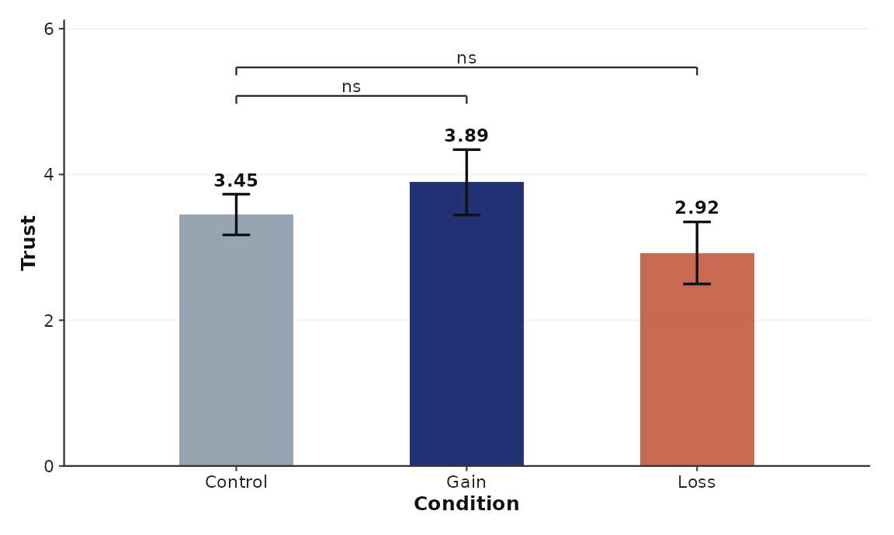
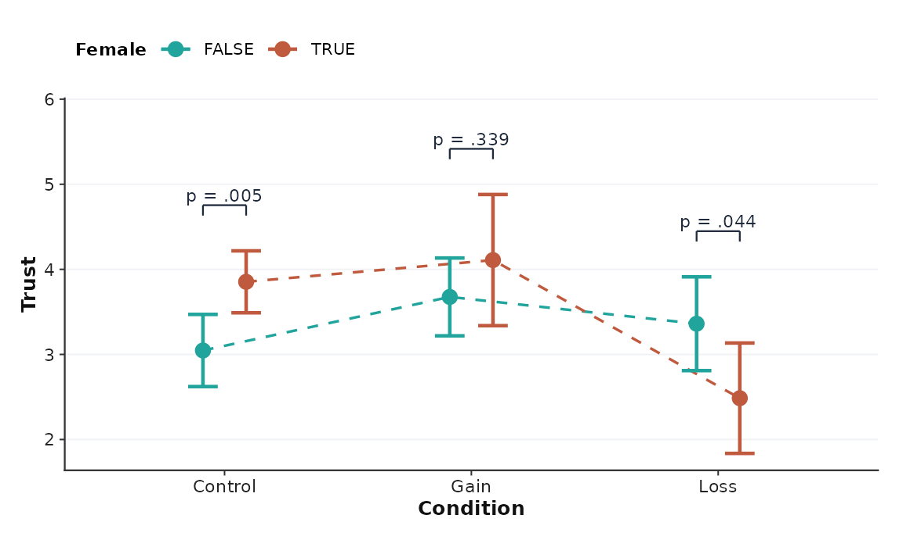
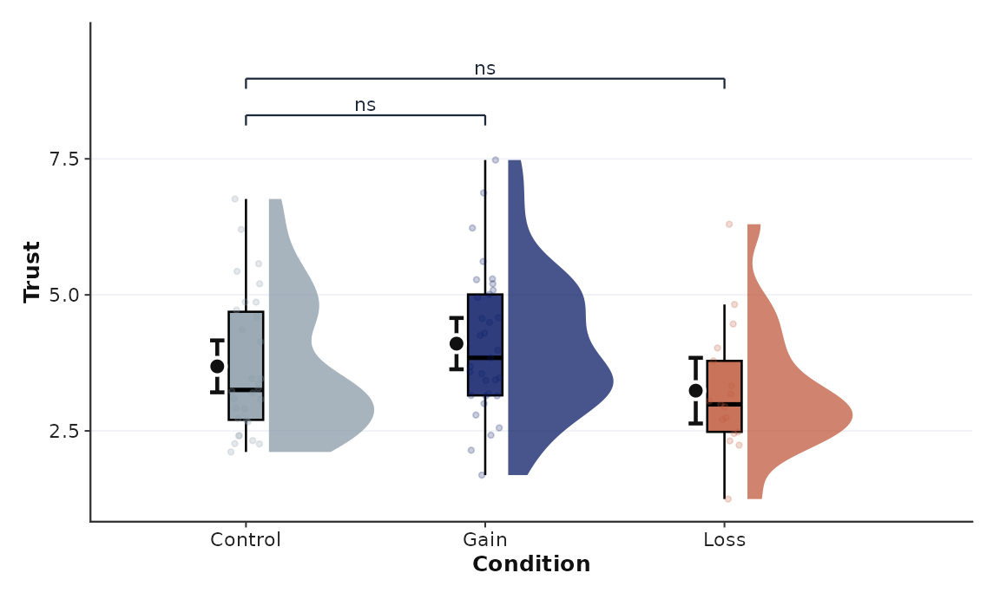
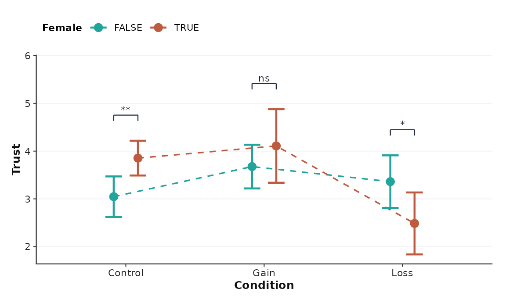
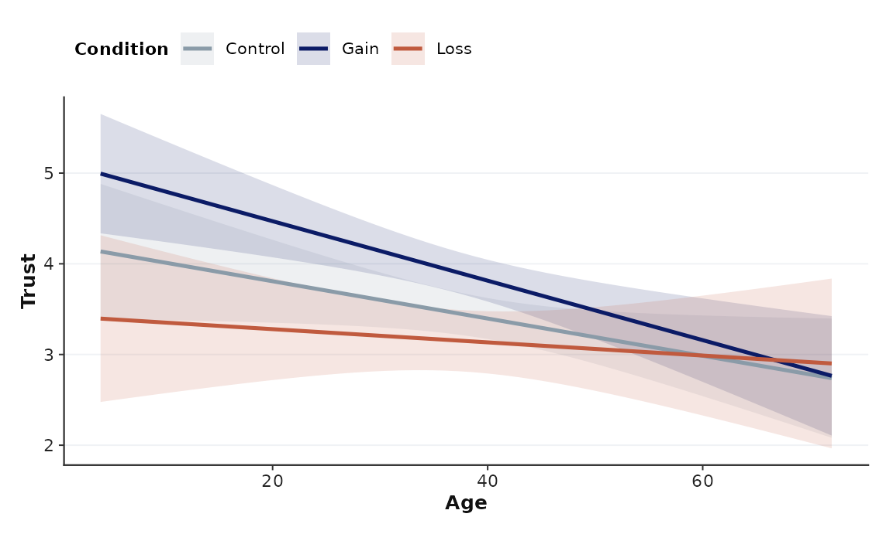
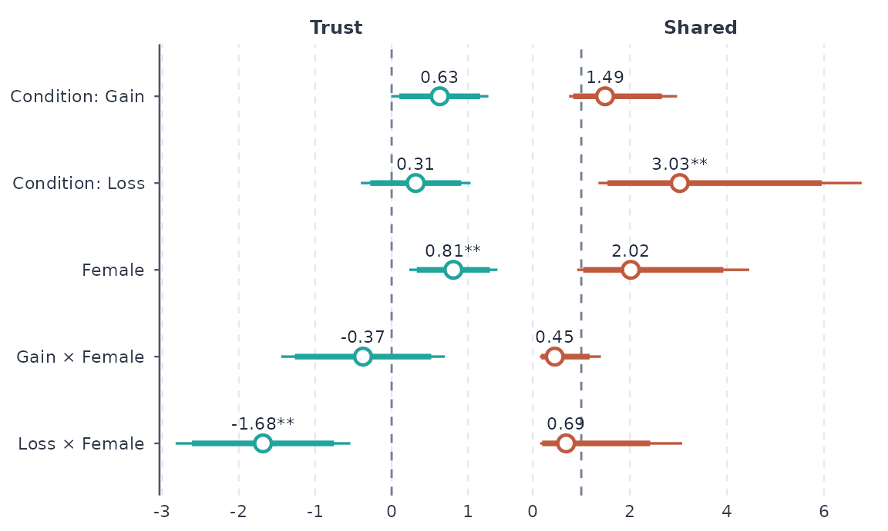
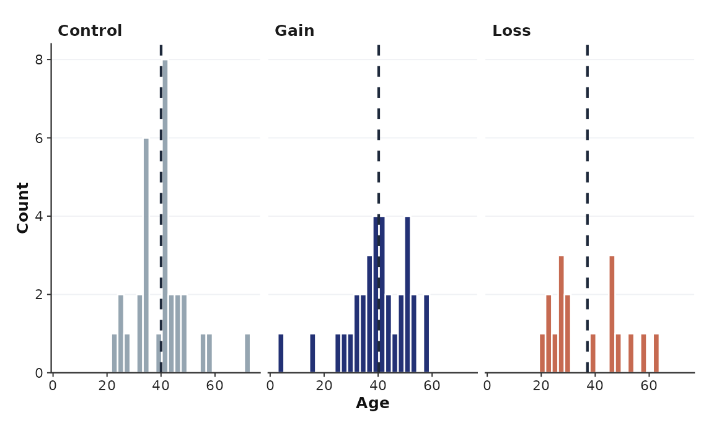

Every plot is an ordinary ggplot, so + labs(),
+ facet_wrap(), + theme() and any other layer
work. The default look is a Nature/Science-style theme with a
colour-vision-checked palette and journal column widths.
library(cleanresults)
d <- cr_example_data()
p <- d[!duplicated(d$id), ] # one row per person, for raw-data plots
res <- clean_regress(
d,
dvs = c(trust = "linear", share = "logistic"),
predictors = ~ condition * female,
random = ~ (1 | id),
contrasts = "condition",
dv_labels = c(trust = "Trust", share = "Shared")
)
#> Registered S3 method overwritten by 'clubSandwich':
#> method from
#> bread.mlm sandwichGroup means with significance brackets
From a fitted model, the means are estimated marginal means with the model’s own (robust) SEs, and the brackets use the same adjusted contrasts as the table, so a star on the figure always matches the table and text.
cr_plot_means(res, "trust", "condition")
cr_plot_means(res, "trust", "condition", by = "female", type = "dot", p = "value")
From a data frame you get raw means with SE, SD, or CI and Welch t-test brackets (Holm-adjusted by default):
cr_plot_means(p, "trust", "condition", type = "raincloud")
Brackets: comparisons = "ref" (versus the first level),
"all", "sig", or named pairs;
p = "stars", "value", or "none".
P-values always come from the full set of pairs, so showing
fewer brackets never changes them.
Interactions
cr_plot_interaction(res, "trust", "condition", "female")
With a continuous variable on the x axis you get predicted lines and ribbons:
res_age <- clean_regress(d, dvs = c(trust = "linear"),
predictors = ~ condition * age)
cr_plot_interaction(res_age, "trust", "age", "condition")
Coefficients and distributions
The forest plot has a thick 90% interval inside the thin 95% interval, and a dashed line at no effect.
cr_plot_coef(res)
cr_plot_hist(p, "age", by = "condition")
Captions, themes, colours, export
Every plot carries a method note for the caption:
g <- cr_plot_means(res, "trust", "condition") + ggplot2::labs(title = "Study 1")
attr(g, "cr_note")
#> [1] "Bars show model-estimated marginal means (Linear mixed; CR2 cluster-robust SEs clustered by ID with Satterthwaite df). Error bars show 95% confidence intervals. Brackets show pairwise model contrasts, Holm-adjusted across all pairs. * p < .05, ** p < .01, *** p < .001; ns = not significant."-
Themes:
theme_cr("nature")(default),"psychsci","jcr","polsci". Passstyle =to any plot, or addtheme_cr()to your own. -
Colours:
cr_palette(n)picks validated defaults (2 groups: teal, terracotta; 3: slate control, navy, terracotta; 4: navy, teal, terracotta, purple). Every pair in them stays distinguishable for colour-blind readers. Slate and teal are almost identical for red-blind readers, so avoid using them together. Other palettes:"teal_terracotta","forest_lilac","nordic_ochre","partisan_bridge". Set one project-wide withoptions(cleanresults.palette = "forest_lilac"), or usescale_fill_cr(). -
Export:
.pdf(vector, fonts embedded via cairo),.svg,.eps, and.png/.tiffat 600 dpi.widthtakes millimetres or"1col"(88 mm),"1.5col", and"2col"(178 mm).
cr_save(g, file.path(tempdir(), "fig1.pdf"), width = "1col")
cr_palette(3)
#> [1] "#8A9BA8" "#0B1B66" "#C05A3E"